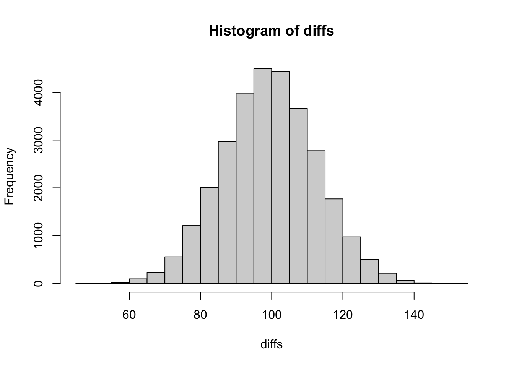

Last updated: 2022-04-24
Checks: 7 0
Knit directory: stats-in-medicine/
This reproducible R Markdown analysis was created with workflowr (version 1.7.0). The Checks tab describes the reproducibility checks that were applied when the results were created. The Past versions tab lists the development history.
Great! Since the R Markdown file has been committed to the Git repository, you know the exact version of the code that produced these results.
Great job! The global environment was empty. Objects defined in the global environment can affect the analysis in your R Markdown file in unknown ways. For reproduciblity it’s best to always run the code in an empty environment.
The command set.seed(20220401) was run prior to running
the code in the R Markdown file. Setting a seed ensures that any results
that rely on randomness, e.g. subsampling or permutations, are
reproducible.
Great job! Recording the operating system, R version, and package versions is critical for reproducibility.
Nice! There were no cached chunks for this analysis, so you can be confident that you successfully produced the results during this run.
Great job! Using relative paths to the files within your workflowr project makes it easier to run your code on other machines.
Great! You are using Git for version control. Tracking code development and connecting the code version to the results is critical for reproducibility.
The results in this page were generated with repository version 6c809bf. See the Past versions tab to see a history of the changes made to the R Markdown and HTML files.
Note that you need to be careful to ensure that all relevant files for
the analysis have been committed to Git prior to generating the results
(you can use wflow_publish or
wflow_git_commit). workflowr only checks the R Markdown
file, but you know if there are other scripts or data files that it
depends on. Below is the status of the Git repository when the results
were generated:
Ignored files:
Ignored: .Rhistory
Ignored: .Rproj.user/
Ignored: data/Unit_1_lab_manual.docx
Ignored: data/classdata.xlsx
Ignored: data/covid_data.xlsx
Note that any generated files, e.g. HTML, png, CSS, etc., are not included in this status report because it is ok for generated content to have uncommitted changes.
These are the previous versions of the repository in which changes were
made to the R Markdown (analysis/unit-4.Rmd) and HTML
(docs/unit-4.html) files. If you’ve configured a remote Git
repository (see ?wflow_git_remote), click on the hyperlinks
in the table below to view the files as they were in that past version.
| File | Version | Author | Date | Message |
|---|---|---|---|---|
| Rmd | 6c809bf | elliothershberg | 2022-04-24 | wflow_publish(c("analysis/unit-4.Rmd")) |
| html | a4bbfda | elliothershberg | 2022-04-21 | Build site. |
| Rmd | 087c22f | elliothershberg | 2022-04-21 | wflow_publish(c("analysis/index.Rmd", "analysis/unit-3.Rmd", |
Notes from Unit 4: Probability Distributions.
Discrete:
\[ E(X) = \sum_{all \, x} x_i p(x_i) \]
Continuous:
\[ E(X) = \int_{all \, x} x_i p(x_i)dx \]
\[ \sigma^2 = Var(x) = \sum_{all \, x}(x_i - \mu)^2p(x_i) \]
coin_variance <- (1 - 3.5)^2 * (1/6) +
(2 - 3.5)^2 * (1/6) +
(3 - 3.5)^2 * (1/6) +
(4 - 3.5)^2 * (1/6) +
(5 - 3.5)^2 * (1/6) +
(6 - 3.5)^2 * (1/6)
coin_variance[1] 2.916667coin_sd <- sqrt(coin_variance)
coin_sd[1] 1.707825surgery_variance <-
(0 - .29)^2 * (0.8) +
(1 - .29)^2 * (0.13) +
(2 - .29)^2 * (0.05) +
(3 - .29)^2 * (0.02)
surgery_sd <- sqrt(surgery_variance)
surgery_sd[1] 0.6526101Refresher on the factorial here:
\[ {n \choose k} = \frac{n!}{k!(n-k)!} \]
$$ {n X}pX(1-p){n-X}
$$
choose(5, 1) * (0.5) * (0.5)^4[1] 0.15625# equivalent
dbinom(1, size = 5, prob = 0.5)[1] 0.15625150 * 0.5[1] 75sqrt(150 * 0.5 * (1 - 0.5))[1] 6.12372475 - sqrt(150 * 0.5 * (1 - 0.5))[1] 68.87628$$ p(Z) = e{-()2} = e{-(Z)2}
$$
\[ Z = \frac{X-\mu}{\sigma} \]
The mini-quiz:
(0.95 - 1.0) / 0.1[1] -0.5pnorm(0)[1] 0.5Quiz:
100 * 0.2[1] 20sqrt(100 * 0.2 * (1 - 0.2))[1] 4# next part
z <- (20 - 20) / 4
pnorm(0)[1] 0.5Quiz:
# What is the Z value that corresponds to 5% area in the right-hand tail of a
# standard normal distribution?
qnorm(.95)[1] 1.644854# What is the T value that corresponds to 5% area in the right-hand tail of a T
# distribution with 15 degrees of freedom?
qt(.95, 15)[1] 1.75305Expected value is sum of each value times probability of that value.
(0 * 0) + (1 * 0.2) + (2 * 0.3) + (3 * 0.3) + (4 * 0.1) + (5 * 0.1)[1] 2.6Standard deviation is square root of variance. Variance is the sum of differences from the mean times the probability.
vals <- 0:5
probs <- c(0.0, 0.2, 0.3, 0.3, 0.1, 0.1)
# using expected value as the mean
m <- 2.6
variance <- (0 - m)^2 * 0 + (1 - m)^2 * 0.2 + (2 - m)^2 * 0.3 + (3 - m)^2 * 0.3 + (4 - m)^2 * 0.1 + (5 - m)^2 * 0.1
variance[1] 1.44sqrt(variance)[1] 1.2Assuming that the trait is normally distributed with a mean of 35.4 and a standard deviation of 9.6, approximately what percent of the population has scores below 20? Enter as a percentage, but do not include the percent sign. Round to 1 decimal place.
z <- (20 - 35.4) / 9.6
pnorm(z) * 100[1] 5.433866In a group of 100 individuals from this population, approximately how many will have scores between 20 and 50?
lower <- (20 - 35.4) / 9.6
upper <- (50 - 35.4) / 9.6
lower_p <- pnorm(lower) * 100
upper_p <- pnorm(upper) * 100
upper_p - lower_p[1] 88.15105For another study, researchers want to categorize participants as having “low”, “normal”, or “high” empathy. What cutoff value for the Empathy Quotient Scale should the they use if they want to define the low-empathy group as those in the lowest 10% of the population on the Empathy Quotient Scale? Round to the nearest whole number.
z <- qnorm(0.1)
z[1] -1.281552So -1.28 = (x - 35.4) / 9.6
Which means x = 23.112. Rounded to 23.
A new cancer therapy has a response rate of 25% for an otherwise untreatable cancer. If 8 patients are given the new therapy, what’s the probability that exactly 3 will respond to the treatment? Calculate the exact binomial probability (do not use the normal approximation). Enter as a percent, but do not include the percent sign; round to one decimal place.
dbinom(3, size = 8, prob = 0.25) * 100[1] 20.76416A new cancer therapy has a response rate of 25% for an otherwise untreatable cancer. If 8 patients are given the new therapy, what’s the probability that 2 or fewer will respond to the treatment? Calculate the exact binomial probability (do not use the normal approximation). Enter as a percent, but do not include the percent sign; round to one decimal place.
pbinom(2, size = 8, prob = 0.25) * 100[1] 67.85431round((pbinom(2, size = 8, prob = 0.25) * 100), 1)[1] 67.9In a new lottery, the probability of winning is 1 in 10 million. If you win, you will win $10,000,000. The lottery costs 5 dollars to play. What is the expected value of playing this lottery? Enter as a dollar amount without the dollar sign.
Example from lecture:
E(X) = P(win) * $2,000,000 + P(lose) * -$1.00
p_win <- 1 / 10e6
p_lose <- 1 - p_win
ev <- (p_win * 10e6) + p_lose * -5
ev[1] -4In a study of 100 people, researchers tested the effectiveness of a new home laser on improving facial appearance. Researchers photographed participants’ faces before and after 4 weeks of use of the laser. An independent dermatologist compared the two photos for each participant, but was not told which was the “before” picture and which was the “after” picture. For 59 out of 100 participants, she determined that the facial skin looked better in the “after” picture than in the “before” picture.
What is the probability that she would have correctly ordered 59 or more pictures if she was just guessing?
Hint: use a normal approximation to the binomial. Enter as a percent, but do not include the percent sign; round to 1 decimal place.
pbinom(58, 100, prob = 0.5, lower.tail = FALSE)[1] 0.04431304fifth <- qnorm(0.05)
twenty_fifth <- qnorm(0.25)For a particular infectious disease, 15% of non-vaccinated individuals will become infected with the disease in one year versus 5% of vaccinated individuals. Simulate a virtual randomized trial in which you vaccinate 1000 individuals with the real vaccine and 1000 individuals with a placebo vaccine and follow the groups for one year. (Hint: Generate values from random binomial functions with N=1000, p=.15 and N=1000, p=.05; then subtract). How many more infections occurred in the placebo group than in the vaccine group in this single virtual trial?
p_placebo <- rbinom(1, size = 1000, prob = 0.15)
p_vacc <- rbinom(1, size = 1000, prob = 0.05)
p_placebo - p_vacc[1] 108Repeat the virtual trial described above 30,000 times using a do-loop (SAS) or for-loop (R). Each time, record the number of excess infections in the placebo group (the number of infections in the placebo group minus the number of infections in the vaccine group). Which of the following is the histogram that results from this simulation trial?
n_reps <- 30000
diffs <- vector("integer", length = n_reps)
for (i in 1:n_reps) {
p_placebo <- rbinom(1, size = 1000, prob = 0.15)
p_vacc <- rbinom(1, size = 1000, prob = 0.05)
diffs[[i]] <- p_placebo - p_vacc
}
hist(diffs)
sd(diffs)[1] 13.18015
sessionInfo()R version 4.1.1 (2021-08-10)
Platform: x86_64-apple-darwin17.0 (64-bit)
Running under: macOS Big Sur 10.16
Matrix products: default
BLAS: /Library/Frameworks/R.framework/Versions/4.1/Resources/lib/libRblas.0.dylib
LAPACK: /Library/Frameworks/R.framework/Versions/4.1/Resources/lib/libRlapack.dylib
locale:
[1] en_US.UTF-8/en_US.UTF-8/en_US.UTF-8/C/en_US.UTF-8/en_US.UTF-8
attached base packages:
[1] stats graphics grDevices utils datasets methods base
other attached packages:
[1] workflowr_1.7.0
loaded via a namespace (and not attached):
[1] Rcpp_1.0.7 highr_0.9 compiler_4.1.1 pillar_1.6.4
[5] bslib_0.3.1 later_1.3.0 git2r_0.29.0 jquerylib_0.1.4
[9] tools_4.1.1 getPass_0.2-2 digest_0.6.29 jsonlite_1.7.2
[13] evaluate_0.14 tibble_3.1.6 lifecycle_1.0.1 pkgconfig_2.0.3
[17] rlang_0.4.12 rstudioapi_0.13 yaml_2.2.1 xfun_0.29
[21] fastmap_1.1.0 httr_1.4.2 stringr_1.4.0 knitr_1.37
[25] sass_0.4.0 fs_1.5.2 vctrs_0.3.8 rprojroot_2.0.2
[29] glue_1.6.0 R6_2.5.1 processx_3.5.2 fansi_0.5.0
[33] rmarkdown_2.11 callr_3.7.0 magrittr_2.0.1 whisker_0.4
[37] ps_1.6.0 promises_1.2.0.1 htmltools_0.5.2 ellipsis_0.3.2
[41] httpuv_1.6.5 utf8_1.2.2 stringi_1.7.6 crayon_1.4.2